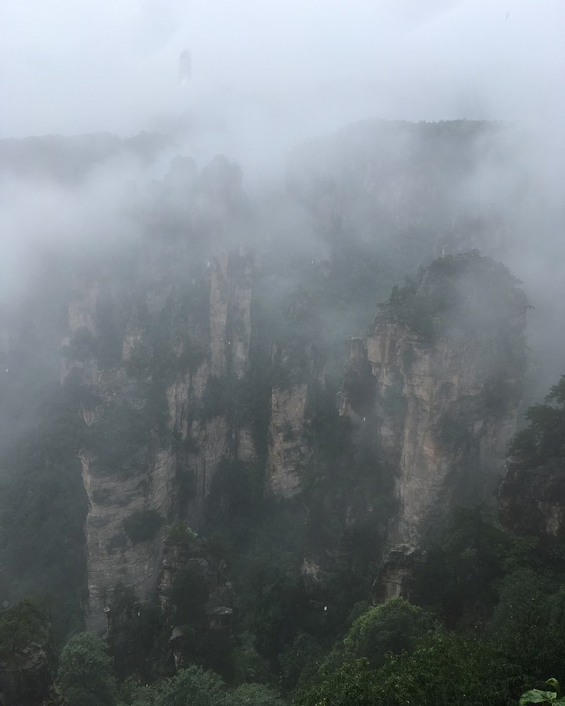

Choose a season, then check the forecast
| Months | Planning conditions | What to check |
|---|---|---|
| Jan–Feb | Cold conditions; ice can affect paths. | Check the Chinese New Year dates and closures. |
| Mar–Apr | Spring conditions with changing weather. | Carry rain protection and keep viewpoint plans flexible. |
| May–Jun | A useful spring / early summer planning window. | Check Labour Day dates; expect possible rain. |
| Jul–Aug | Summer heat, rain and school-holiday demand. | Reserve ahead and leave room for queues. |
| Sep–Oct | Autumn is a common walking-trip choice. | Avoid the National Day peak if you can. |
| Nov–Dec | Shorter days and colder conditions. | Confirm maintenance and last transport services. |
Check Chinese holidays before reserving
National Day, Labour Day and Chinese New Year can change travel demand significantly. Use the official calendar for your year; do not assume every holiday has exactly the same dates or length.
For a fixed departure date, reserve accommodation and timed admissions before filling every hour of your route.
Mist, rain and visibility
Cloud between the sandstone pillars can be beautiful, but fog can also hide every viewpoint. There is no dependable “cloud-sea appointment”. Build a trip you will enjoy even without that photograph.
- Bring shoes with grip and a waterproof layer.
- Keep an extra layer for exposed ridges.
- Use an indoor or shorter-route alternative during poor conditions.
- Check current closures and the weather forecast close to departure.


Sources & review notes
Editorial review: 13 October 2026. Operational claims below are dated, not a live status feed.